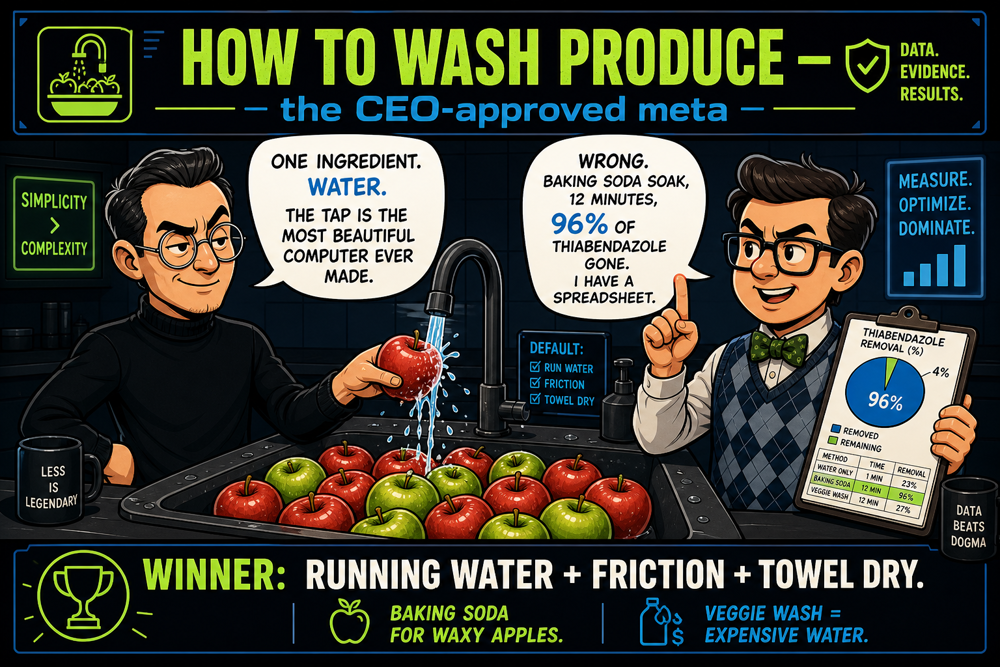
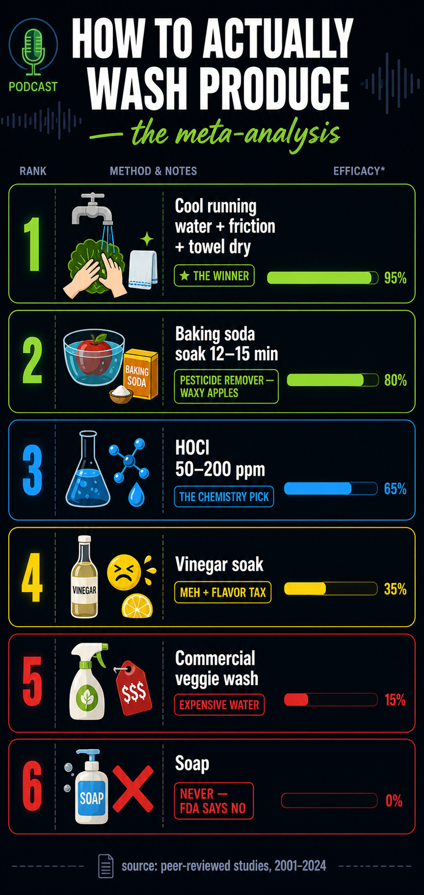

Steve Jobs × Bill Gates debate the best way to wash fruits and vegetables. Water minimalism vs 47 studies. Baking soda, HOCl, the PurePod, and why commercial veggie wash is theater. Real science, zero dignity.


Headline numbers come from the review the episode is built on: Subramaniam et al., Reducing pesticide residues on produce: a scoping review of household produce washing methods, Frontiers in Environmental Health (2026) — 47 studies, 23 produce types, 79 pesticides.
| Method | Verdict |
|---|---|
| Cool running water + rub + towel dry | The winner. 30+ seconds under the tap, rub firm produce, dry with a clean towel — friction removes most surface bacteria. FDA-recommended. |
| Baking soda soak (12–15 min) | Best studied method for surface pesticides — the UMass apple study showed it beats water for thiabendazole/phosmet. Rinse after. |
| HOCl 50–200 ppm | Real chemistry, used commercially for produce sanitation; neutral taste at proper concentration. Home DIY generators: verify concentration with test strips — unregulated. |
| Vinegar soak | Modest effect, leaves flavor residue. Rinse well after. |
| Commercial veggie wash | Studies show no better than plain water. Expensive water. |
| Soap / detergent | Never. FDA says no — residue, not safe on produce. |
Sources: Scoping review of household produce washing, Frontiers in Environ. Health (2026) — the episode's centerpiece · UMass baking-soda apple study, J. Agric. Food Chem. (2017) · FDA: 7 Tips for Cleaning Fruits & Vegetables · Hypochlorous Acid: A Review (2020) · HOCl as produce sanitizer · Commercial leafy-greens wash study (2020) · US Apple Association: produce-wash claims · Center for Food Safety: the truth about produce wash